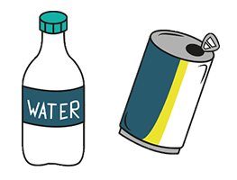
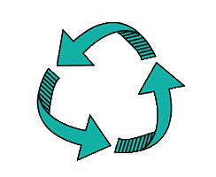

Het probleem
Ik loop er zo vaak tegen aan dat ik een flesje of blikje kwijt wil maar niet in de buurt ben van een automaat. Ik zet het tegenwoordig heel vaak naast een prullenbak, dan kunnen mensen die dat geld kunnen gebruiken het makkelijk pakken zonder helemaal in de prullenbak hieven te graaien. Tegelijkertijd is het wel erg vervuilend. Stel niemand neemt dat blikje of flesje van de grond mee, dan ligt het wel echt op een verkeerde plek.


De goeie oplossing
Nu zag ik deze gele statiegeld bak en ik vind het echt geweldig. Je gooit je flesje of blikje erin en er zit een klep aan de onderkant dat mensen die het nodig hebben het er gewoon zo uit kunnen halen zonder een duik te maken in de prullenbak. Je vervuilt er dus niks mee en de mensen die het nodig hebben kunnen het zonder moeite eruit halen. Ik vind het zelf erg belangrijk dat als iemand dat geld goed kan gebruiken en ik het niet per se meer hoef, dat ik dan iemand anders daar heel blij mee kan maken.
En duurzaam is het ook nog, al die flesjes en blikjes belanden gewoon weer in een bak en dan niet op de grond. Mensen die er wat aan hebben kunnen het gewoon pakken en jij bent je flesje of blikje kwijt in no time. Het is maar een kleine moeite denk ik dan.